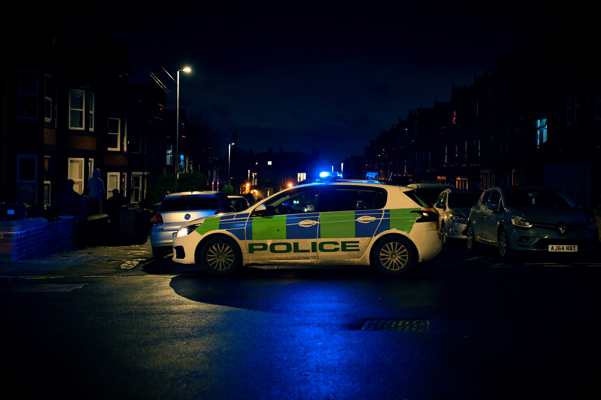

Ship Crew Arrested for Disorderly Conduct

Last Tuesday Vinstri police arrested five members of a ship’s crew for extensive damage to a seaport bar. This is the third incident involving a ship’s crew in the last year.
The perpetrators were part of the crew on the Queen Mary, a cargo ship which landed at the Vinstri port at 9:00 pm on September 4th. The five crew members disembarked and entered the Vinstri Port Bar, where the altercation occurred. According to witnesses, the altercation was the result of an argument between one crew member and another patron, and resulted in a bar-wide scramble. The police arrived at 10:15 pm and diffused the situation, arresting the five crew members and two other individuals for disorderly conduct. No serious injuries have been reported.
However, Paul Shea, the bar owner, expressed frustration over the episode, stating that, “most people on the island won’t start a fight like this, but I’ve had three times recently when fights broke out, and two were caused by someone from a ship.” He said that the damage repairs were also expensive. “I’ve had to pay at least three thousand dollars alone in the last year to fix all the damages they cause,” Shea reported. “This needs to stop.”
Currently, the crew members are awaiting trial. It is expected that they will be required to pay damages for the destroyed property, and may face further penalties. The Vinstri City Police chief, Harold Mann, hinted that they may be treated more harshly as an example to other offenders. “This is not something I want to continue,” the chief declared at a press conference. “It needs to be stopped before someone gets seriously hurt.”
As ships continue to stop at Betralund’s two ports on their way across the Atlantic, Mann cautioned islanders to be careful and to call the police if they see another incident.